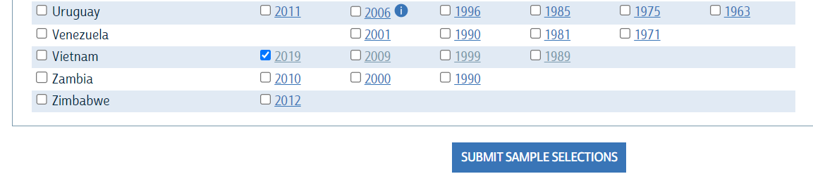

What is IPUMS?
“HARMONIZED INTERNATIONAL CENSUS DATA FOR SOCIAL SCIENCE AND HEALTH RESEARCH”
IPUMS provides census and survey data from around the world integrated across time and space. IPUMS integration and documentation makes it easy to study change, conduct comparative research, merge information across data types, and analyze individuals within family and community context. Data and services available free of charge. To know more about IPUMS see https://international.ipums.org/international/.
104 COUNTRIES – 565 CENSUSES AND SURVEYS – OVER 1 BILLION PERSON RECORDS
SOURCE DATA FOR IPUMS INTERNATIONAL ARE GENEROUSLY PROVIDED BY PARTICIPATING NATIONAL STATISTICAL OFFICES
Download tutorial
Step 1: Choose “Browse and Select Data”
Step 2: Select samples and variables to build a data extract
- Firstly, we have to “Select samples”. Samples are collected from 104 countries - 565 censuses and surveys with over 1 billion person records. Samples are listed in order from A-Z. Then, we could choose the country and the year we need.
Samples are categorized by continents such as Africa, the Americas, Asia, and Europe. They are also filtered by historical and survey options.
For example, I choose the Vietnam 2019 data and submit my selection by clicking “Submit sample selections”

- Secondly, we choose variables we need to analyze (pictures below). There are 2 types of variables: “Harmonized Variables” and “Source Variables”, to know more about these types see Questions 9 and 10 in FAQ.

After choosing your variables, we go to our data cart by clicking “Data Cart” to create our data extract.
Step 3: Submit extract
At the extract request step, we can double-check the samples and the variables that we have chosen. Also, we can extract data in different formats such as fixed-width text (.dat), Stata (.dta), SPSS (.sav), SAS (.sas7bdat), or comma delimited (.csv). Click “Submit Extract” when finishing requests.
Step 4: Download data
After submitting our requests, we will be moved to Download or Revise Extracts page. Here, we can see the status of the data we download. When completed, the data will be available. Don’t forget to read the codebook or you can use my ipums dictionary to understand the contents of the extract.
Dictionary: https://lamngthanh.github.io/popdta/pop_dictionary.html